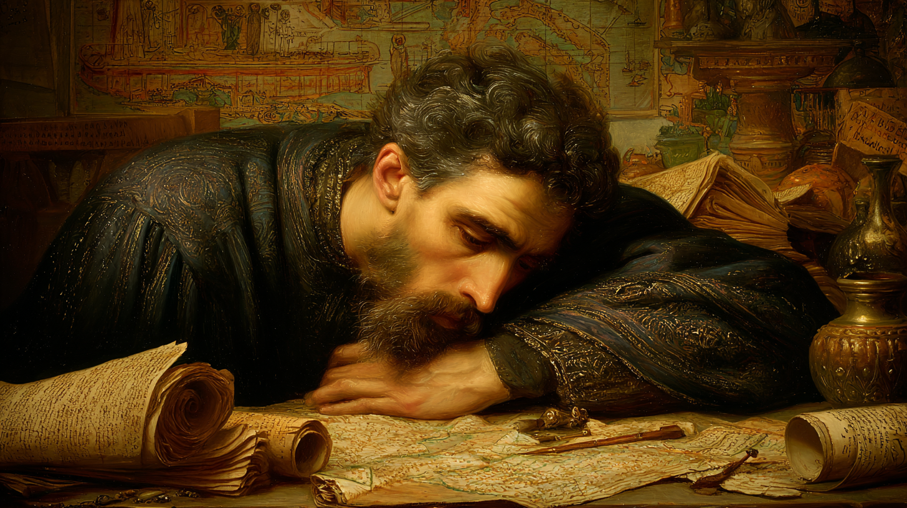

The Cartographer — Refugee of the Second Rome — Eyes of Gold
"He has been right about every catastrophe he predicted. He wanted to be wrong about all of them."

Theodoros was born in Anatolia in 1169, the son of a family of modest means who recognised their child's aptitude and, when his Gift manifested around age six, had the wisdom to seek help rather than panic. Through scholarly networks they learned of Anna Komnene of Constantinople — not the famous historian, but her granddaughter, a respected Jerbiton maga who accepted him as apprentice in 1178. She gave him the name Photios, "luminous one." He has kept the name. The irony of it has grown heavier each year.
Mouseion Prometheia was one of Constantinople's great achievements: a covenant dedicated to the preservation and transmission of knowledge, named after the ancient Library of Alexandria and the Titan who gave fire to humanity. It housed extensive libraries in Greek and Latin, served as bridge between Hermetic and Byzantine scholarship, and specialised in Intellego magic and the subtle diplomatic arts Jerbiton cultivated. Photios grew up inside it, surrounded by manuscripts, mosaics, the endless intellectual ferment of the greatest city in the Christian world.
Anna was, in his words, everything he aspired to be and will not become. Scholarly, cultured, politically astute, committed to preserving civilisation's achievements — a true Komnene, in the scholarly sense that mattered more to Photios than any imperial title. She trained him not just in magic but in the whole of Byzantine scholarly tradition: Greek philosophy, classical cartography, Orthodox theology, Hermetic theory as an extension of natural philosophy.
Two significant limitations became apparent during apprenticeship. His magic worked best at Touch range; anything beyond was significantly less effective. And his power rose markedly in winter and summer, then fell during the transitional seasons. Anna taught him to see these not as failures of character but as the specific shape of his Gift — which is the sort of thing only a truly good teacher says, and which Photios has never entirely believed.
He passed his gauntlet in 1193 and remained at Mouseion Prometheia, developing his research programme in magical cartography and the preservation of texts. A Lesser Malediction — the Age Quickly curse — had already been quietly at work since his mid-twenties, advancing his apparent age ahead of his chronological years. By the time it was formally recognised, there was no remedy. Anna researched potential solutions; she had not found one by the time everything ended.
In 1203, Solving visited Constantinople. Photios was introduced to him through the covenant, and then to Khalida al-Maghribiyya, newly arrived from Al-Andalus. The three of them formed a small intellectual circle, debating Avicenna and Greek philosophy and mystical theology in the evenings, mapping the city's magical auras by day.
By late 1203, Photios's characteristic pessimism — his Good Eye finding disaster before it announced itself — had detected what his colleagues at Mouseion Prometheia could not bring themselves to credit. He began quietly securing texts, making portable copies, preparing contingency resources. His warnings were heard as typical Photios: too thorough, too gloomy, constitutionally unable to believe things would turn out well. Even Anna thought he was overreacting.
He had wanted to be wrong. He had prepared for disaster because he could not help himself, not because he wanted his preparation to be necessary. When Solving's premonition came and he believed it instantly — not through trust in Criamon visions but through the cold confirmation of his own fears — what he felt was not vindication. There is no word in Greek for what he felt, though he has looked. — Internal note, Sjórseiðr archive
He, Solving, and Khalida fled on April 11, 1204. The Crusaders breached the walls the following day. Constantinople — which had stood for over nine hundred years, which had preserved classical learning through the Dark Ages, which housed irreplaceable libraries and treasures — was systematically looted over three days. Mouseion Prometheia burned. The libraries he had spent his life preserving were gone.
Anna Komnene's fate is unknown. She may have died in the destruction. She may have fled. She may be imprisoned. Photios does not know, and this uncertainty is a wound that has not closed.
Everything Photios believed about preserving knowledge — build strong walls, maintain institutions, copy carefully, create permanence — was tested against Constantinople and failed. The city stood for nine centuries. It fell in three days. This is not an event he has processed and moved past. It is the new ground on which everything subsequent is built, and the ground is unstable.
A scholar's profile in every direction. The Dexterity at +1 is the cartographer's hand — long-fingered, precise, built for instruments and ink rather than physical work. Presence and Communication at +2 reflect Jerbiton training and Byzantine court culture: he is well-mannered, eloquent, carries himself with the careful posture of someone who grew up in a civilisation that regarded refinement as an achievement. Strength at −2 has never mattered. He has compensated for everything physical with everything else.
Five feet seven inches, slight of frame, carrying himself with the careful posture of someone who spends long hours bent over manuscripts and maps. At thirty-six, premature grey already streaks his black hair — not all of it from the curse. His brown eyes are intelligent and observant, constantly assessing, noting both the detail and everything that might go wrong with it. Angular, aristocratic face in the Byzantine manner, high cheekbones, a neatly trimmed beard kept in the Orthodox scholarly fashion.
His hands are a cartographer's tools — long-fingered, precise, perpetually ink-stained. He moves deliberately, economically, wasting no motion. When concentrating, he traces invisible patterns in the air or on surfaces, mapping thoughts as naturally as geography. He dresses in Byzantine style despite his current refugee status — deep blues, blacks, subtle purples, well-made but practical. He wears a small silver Orthodox cross on a chain, one of the few physical objects he saved from Constantinople.
His Hermetic sigil: When he casts, his pupils turn bright gold — the colour of illuminated manuscript capitals, of mosaic tesserae, of icons in candlelight — then slowly fade like ink dissolving in water, returning to mundane brown. It is both beautiful and unsettling, as though something older than him briefly looks through his eyes.
The character sheet records three personality traits as items — Good Eye, Pessimist, and Courteous — but does not assign formal scores. The values shown below are interpretive, drawn from the biography text.
Good Eye +2: Notices details others miss. The inconsistency in the map, the unusual magical signature, the subtle political undercurrent. This combines with his pessimism in a way that is simultaneously invaluable and exhausting to be around: he sees both the danger signs and the potential solutions, and consistently emphasises the former. He is right often enough that dismissing him has a demonstrable cost.
Pessimist +2: Constantly anticipates disaster. This is not performative cynicism — he genuinely sees all the ways things can go wrong and feels compelled to name them. The paradox that defines him: when things are going well, he is anxious and muttering, checking contingency plans. When disaster actually strikes, he goes unnaturally calm. His hands steady. His voice becomes clear. This he planned for.
Courteous +1: Despite the melancholy, maintains Byzantine standards of proper behaviour. Partly Jerbiton training, partly cultural inheritance, partly personal conviction: civilisation matters more when chaos threatens, not less. He is never rude, even when he believes he is surrounded by people who will not heed the warnings they should heed.
It is the waiting for disaster that torments Photios. The disaster itself is almost a relief — at least the uncertainty is over, and his preparations have a purpose. This means he functions best in crises and worst in calm periods. His colleagues may find this frustrating. It is structurally useful for any covenant that encounters the kinds of things Sjórseiðr will inevitably encounter.
Intellego base 12 → effective 15 in all totals (Puissant Intellego adds +3). In strong Cyclic seasons (winter/summer +3): effective 18. Affinity with Intellego further reduces XP costs for future advancement.
Intellego at effective 15 — rising to 18 in winter and summer — combined with Imaginem 8 creates his defining capability: perception of the true nature of things and places, rendered through the cartographer's art. Intellego Imaginem is the combination that makes his maps what they are — not geographical records but phenomenological documents, capturing the genius loci of places in ways that survive the places themselves. Rego 8 is the organising force: knowledge structured, preserved, given form. The Forms are spread deliberately for the information-gathering breadth that Mouseion Prometheia's mission required. The weakness of everything combat-adjacent is structural and known.
No spells are recorded on the character sheet. Photios's repertoire is being developed from scratch after the destruction of Mouseion Prometheia's lab texts in the 1204 sack of Constantinople. What he carries in memory from his pre-1204 work, and what he is developing for the covenant's maritime context, will be the subject of his first laboratory seasons aboard the fleet. The spells he will develop will centre on Intellego combinations for mapping, detection, and preservation of knowledge.
His research priorities in order: Intellego Imaginem spells to capture genius loci for maps; Intellego Vim for magical topology and aura mapping; Intellego Terram for geographical detail and mineral survey; Rego Imaginem for preserving and transmitting images; and eventually the collaborative enchantment with the next Sjórseiðr recruit — an updating map that records everywhere the fleet visits. This is his masterwork vision: the mobile equivalent of Mouseion Prometheia's library.
When Photios casts any spell, his pupils turn bright gold — the specific gold of illuminated manuscript capitals, of mosaic tesserae in candlelight, of icon gold leaf at the moment a candle is brought close. The colour holds for the duration of the spell's establishment, then slowly dissolves like ink in water, returning his eyes to ordinary brown. Those who have seen it once find it difficult to look away from. It is beautiful and slightly wrong in the way that genuine magical phenomena are always slightly wrong — too precise, too intentional, as though the eyes themselves are communicating something the person behind them has not chosen to say.
The sigil is consistent across all his work and has been documented reliably since his gauntlet. It can serve as identification. Those familiar with his casting recognise it immediately; those who witness it for the first time tend to stare.
Photios's magic rises and falls with the year's turning. This is one of his two most significant structural characteristics — the other being Short-Ranged Magic — and it has shaped his entire approach to research, covenant life, and the management of his own capabilities.
Photios naturally tends to structure covenant activities around his magical cycles — scheduling major magical undertakings for winter and summer, using shoulder seasons for logistical and scholarly work. He does not always announce this tendency openly, but it manifests in how he advocates for timing decisions. Those who have worked with him for a full year recognise the pattern and find it useful rather than limiting — his power seasons align well with the North Sea's winter storms (when the fleet shelters and laboratory work is possible) and summer sailing season (when visibility and conditions support exploration).
Photios's primary contribution to Sjórseiðr — and to the preservation of knowledge more broadly — is magical cartography: the creation of maps that record not just geography but the magical, cultural, and spiritual character of places. Profession: Cartographer 3, Finesse 4, Intellego 12 (effective 15 with Puissant), and Imaginem 8, combined with Free Expression, constitute a unique capability within the covenant and possibly within any Tribunal's boundaries.
If the city will not stand — if walls cannot protect knowledge and institutions cannot preserve it through time — then perhaps the knowledge must be made into something that moves. Perhaps the map that travels is safer than the library that burns. — Photios Chrysoloras, in correspondence with Solving Epicurusson, 1204
Photios's long-term vision, requiring collaboration with a skilled enchanter: an item that updates itself as the fleet travels, recording every location visited, every aura encountered, every vis source discovered, every genius loci mapped. A mobile equivalent of Mouseion Prometheia's library catalog — not the texts themselves but the index of where everything is, what everything is, how to find it again. This is the philosophical resolution of his foundational conflict: knowledge preserved not through permanence but through continuous, living documentation of the world as it is encountered.
Photios makes two aging rolls per year instead of one. His effective age advances ahead of his chronological years, and any Longevity Ritual must be calculated against effective rather than chronological age — making it more difficult to create and less effective once created. At chronological 36, he appears and feels 37. The progression is not yet dramatic. It is inexorable.
The curse's origin is unknown. It manifested during his mid-twenties as something that was initially attributed to stress and overwork. Anna eventually recognised it for what it was. She researched remedies. She had not found one before everything ended.
| Factor | Current State (1205) | Implication |
|---|---|---|
| Chronological Age | 36 | Should be entering mid-career by Hermetic standards |
| Effective Age | 37 | Gap will widen; each year advances effective age by two |
| Longevity Ritual | Not yet created | Must counteract effective 37, not chronological 36; requires stronger ritual |
| Urgency | Moderate but rising | Not yet critical — will become so within a decade without intervention |
| Source | Unknown | Divine punishment? Tribunal rivalry? Random misfortune? All three remain possible |
Photios wrestles with the curse theologically in ways he does not fully articulate to his companions. Is this divine punishment for unknown sin? Is suffering the price of wisdom? If time is running faster for him than for others, what is he meant to accomplish before it runs out? His Orthodox faith tells him God exists; his life's experience gives him reasons to doubt God is reliably benevolent. He prays faithfully. He expects no answers. He continues working.
Photios is devoutly Orthodox Christian, wearing his small silver cross as one of the few physical objects he saved from Constantinople. His theology is sophisticated, somewhat troubled, and Byzantine in the specific sense that means: Greek philosophical tradition integrated with Christian doctrine, Platonic and Aristotelian frameworks providing the skeleton on which Orthodox thought is organised.
Unlike Khalida's Sufi universalism — which resolves theological tension through direct mystical experience — or Solving's Criamon framework — which dissolves the question into the Enigma — Photios's faith is more interrogative. He believes God exists. He is not sure God is trustworthy. He believes the divine is present in creation, including in his Gift. He cannot reconcile this with the destruction of Constantinople, with the loss of the libraries, with a curse whose origin and purpose are opaque.
He prays regularly, in Greek, in private, with the careful fidelity of someone who maintains practice regardless of whether the practice feels meaningful. This is, in its way, the most faithful form of faith — continuing when continuation is the only argument for continuation.
Photios wants to believe in permanence, in roots, in building something that lasts. Solving believes in mobility, flow, ataraxia through non-attachment. They are founding a covenant based on Solving's philosophy, and Photios has not yet resolved whether this represents genuine wisdom, sophisticated rationalization, or simply running away from the ruins.
Their debates are productive precisely because neither will concede the central point. Photios brings Greek philosophical rigour to challenge Solving's vague mysticism; Solving brings Epicurean equanimity to challenge Photios's rigid assumptions about permanence. Constantinople fell. Institutions fail. But Photios still believes that careful work, meticulous documentation, and the making of beautiful precise things is not merely noble but necessary — even if what is made must be made to move rather than to stay.
She gave him his name, his education, his vocation, his understanding of what a scholar's life could be. She saw in him a kindred spirit — the same careful observation, the same love of knowledge, the same tendency toward melancholic contemplation — and trained him accordingly. Finding her alive would be the best news of his life. Confirming her death would be devastating. The uncertainty is a wound that does not close. He is afraid to look for her directly because he is afraid of what looking might find.
The intellectual relationship that defines 1204 and after. They debate constantly and productively — the mystic who sees patterns and the scholar who sees details, checking each other's excesses. When disaster strikes, they function as complements: Solving perceives the mystical structure of what is happening, Photios perceives the practical particulars that need immediate attention. They do not always agree about what Sjórseiðr is or should become. They have found that disagreeing well is more valuable than agreeing easily.
Shared loss of great centres of learning creates an immediate bond that would not otherwise have formed quickly — a Byzantine scholar and a Moorish weather-worker would have fewer natural meeting points. Both are refugees mourning lost libraries. Both integrate faith with intellectual tradition. Their magical specialisations complement: her weather-working and Magic Sensitivity combined with his cartographic Intellego make them an extraordinary reconnaissance team — she detects the ephemeral auras, he maps them before they dissolve.
A relationship still forming in 1205. Photios's Good Eye has noticed things about Erasmus that he is cataloguing without yet verbalising. The Listener and the man with the Good Eye, each noticing what the other does not announce. Whether this becomes productive wariness or productive trust depends on what Erasmus does in the first year at sea. Photios does not jump to conclusions. He notes them and continues watching.
Unknown how many escaped. Unknown whether any blame him for fleeing rather than staying to defend. Unknown what fragments of what they built have survived and where. The Byzantine émigré network is scattered across Tribunals, and some are attempting recovery efforts. Photios has connections through Anna, through the covenant, through years of scholarly correspondence. These may surface as allies, as antagonists, as sources of news about what remains, or as competing claims on his loyalty.
Photios Chrysoloras is the covenant's memory and its eye — the person who will record what they encounter in forms that might outlast them, and the person who will see what they are heading toward before they arrive. He is not a combat asset. He is barely a field asset in the conventional sense. What he is, in the specific context of a mobile covenant dedicated to the pursuit of knowledge across unknown maritime territory, is close to indispensable: the finest information-gathering magus in the founding group, with the cartographic skills to make that information permanent, and the scholarly depth to contextualise it within the traditions they are inheriting.
He is also, at thirty-six, on a compressed timeline that has added urgency to everything. The curse does not make him desperate — he is too methodical for desperation — but it has clarified his priorities in ways that the other founders are still working through. He knows what matters. He is less certain than he was that he will have time to do it.
To make something that persists. The specific form has changed — from library to mobile atlas — but the underlying drive has not. To find Anna Komnene, or at least to know. To understand why the curse was laid and whether it can be lifted. To be proven wrong, at least once, about the disaster he already sees coming — whichever disaster that turns out to be.
He would not phrase it this way, but: to matter. Constantinople mattered. Mouseion Prometheia mattered. The work of preservation matters. He wants the specific weight of having contributed something that will still exist when he cannot.
I did not want to be right. I prepared because I could not help myself — because the possibility of disaster demands response regardless of whether one desires the disaster to be real. When it was real, I was not comforted by having prepared. I was only still alive to regret that preparation had been necessary. — Photios Chrysoloras; recorded by Solving Epicurusson in his journal, April 1204
This dossier is maintained in the personal records of the Sjórseiðr covenant and should be updated following any development regarding Anna Komnene, the curse's origin, or the Master's Chart project. Solving Epicurusson reviewed this file and added a marginal note — "he has already mapped three harbours and begun the notation system for magical aura gradient recording" — which should be understood as both a correction and a defence. Khalida bint Tariq read it and observed that the word "pessimist" understates the precision of his disaster-detection. Erasmus the Hound declined to comment, which Photios himself would consider appropriate and mildly suspicious.